リリド式で必ず確認
- 楽園: ST/D4位置交代でSTがMT隣に来る。
- 転輪: 線偏り時の調整役。リリドはMT/D1、しのしょーはD3/D4。
- 塔: H/H2/D4固定、D1/D2/D3調整の優先度。
- 爆印: P1最後のMT/ST北南。
- 誘導: サイクロニックは矢印の先端まで誘導。
| 時刻 | 技 | MTナイトの仕事 | 軽減/操作 | 注意 |
|---|---|---|---|---|
| -00:10 | 戦闘開始前 | 全体軽減を仕込む | ヴェール | 開幕全体とAA前の仕込み。カウント10秒で使用。 |
| 00:00 | 開幕AAT | ボスを中央へ。腐るタンバフをAAケアに使う | タンバフ | 開幕からAAあり。次の誘導で中央を崩さない。 |
| 00:15 | サイクロニックブレイク画像LST | 床矢印の先端まで中央誘導。炎: ペア頭割り。雷: 全員AoE | 中央誘導 | 先端まで誘導するとボス向きが変わりにくく近接に優しい。ボスがフィールド中心からズレていたら、ボス基準で受ける。 |
|
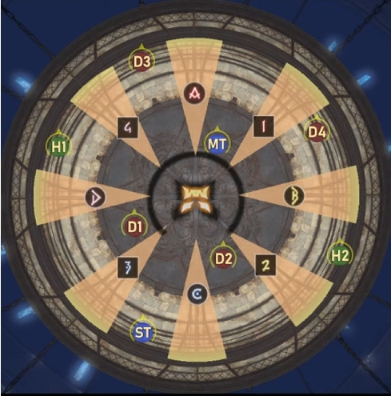 ボスが雷・青色なら散開。全員が時計回りにずれる。遠隔とSTは離れる。 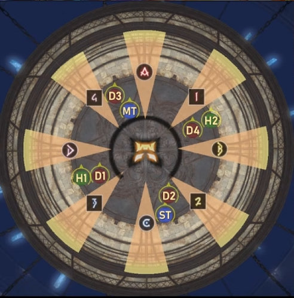 ボスが炎・赤色ならペア頭割り。タンク/ヒラは反時計、DPSは時計回りにずれる。 |
||||
| 00:24 | 連鎖爆印刻注記LST | リプを乗せるなら詠唱後半。バフ受けならST挑発でスイッチ | リプ交代 | 無敵受けならスイッチ不要。ただし早すぎるとAAで死ぬため、AA分も無敵時間に入れる。 |
|
リリードール動画内注記 野良では2回目爆印刻をST無敵、P2開幕をMT無敵にすることが多く、1回目爆印刻はバフ受けスイッチが多い。 バフ受けは詠唱中に挑発。MTは詠唱真ん中くらいからランパートを炊くと、後の爆発にも乗る。 爆発より1回目の攻撃が痛いため、リプ + フルバフ推奨。センチネル/ブルワーク等はランパより先に炊く運用例。 ナイトMTはP3誘導で無敵を使うことが多いため、リキャスト都合で2回目爆印刻をMTナイト無敵、P2をST無敵にする処理例あり。P3誘導はバフ受けも可能なのでPTで相談。 |
||||
| 00:35 | 楽園絶技 開始LS | 外周分身を見て安置判断開始。爆印前にSTがMT隣へ来る形を確認 | 安置 | リリド式はSTとD4位置交代で、STがMT隣に来る。まず爆印を先に処理。 |
| 00:41 | 爆印発動画像LT | STと近づいてタンク2人で受ける。PTを巻き込まない | 受け | スプレッドシートでは00:41。範囲が大きい。D/H2はタンク逆側寄りだと安全。 |
|
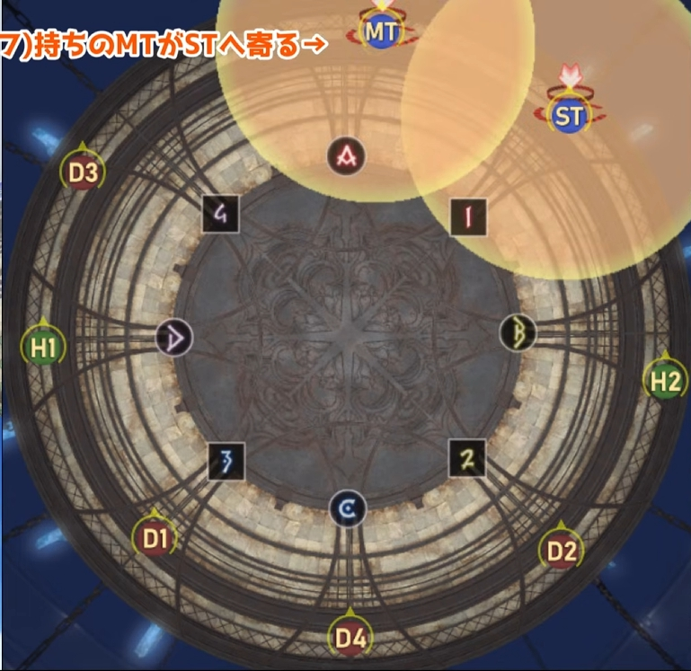 直前の連鎖爆印刻の爆発をタンク2人で受けるため、MT/STが近くにいる。 |
||||
| 00:45 | 楽園絶技 頭割り/散開画像LS | 爆印後、安置で炎なら4:4頭割り、雷なら散開 | 安置 | 担当は西側がMT組、東側がST組の意識で見る。 |
|
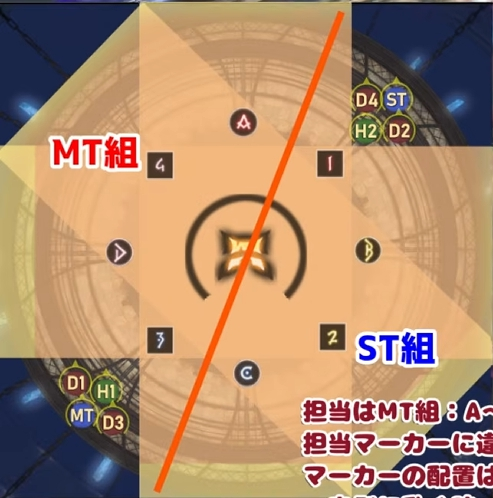 担当はMT組: A〜3 / ST組: 1〜C。図の安置は一例。 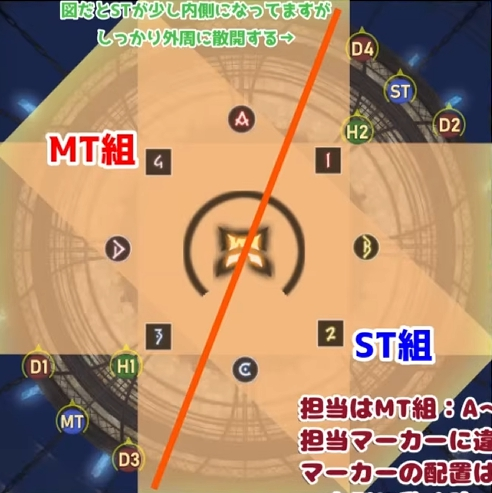 赤文字注記はB,D安置と同じ。図だとSTが少し内側になっているが、しっかり外周へ散開する。 リリードール動画内注記 担当マーカーに違和感はあるが、マーカー配置は今さら変えられない。Aを含めた西側 / Cを含めた東側で考える。 内側に動く時、ジャンプすると紛らわしいため歩いて動く。 安置が分かったくらいで陣、ケーラを使うと、もう1個後の4:4頭割りでちょうどリキャストが返る。 |
||||
| 01:04 | 転輪召画像LS | A付近分身の逆色が安置。線偏り時は調整役を確認 | 線処理 | リリド式はMT/D1調整の可能性。しのしょー式はD3/D4調整。 |
|
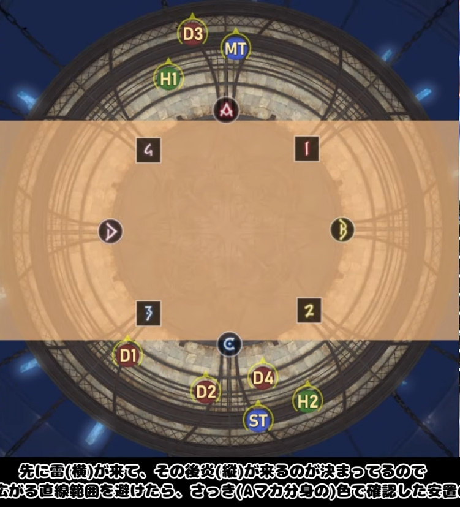 A付近分身の逆色が安置。雷は横に広がる直線範囲。 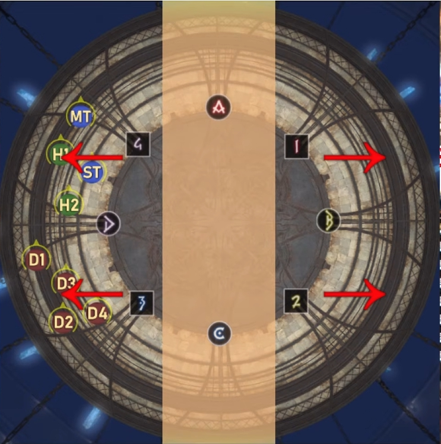 A付近分身の逆色が安置。炎は縦直線後ノックバック。 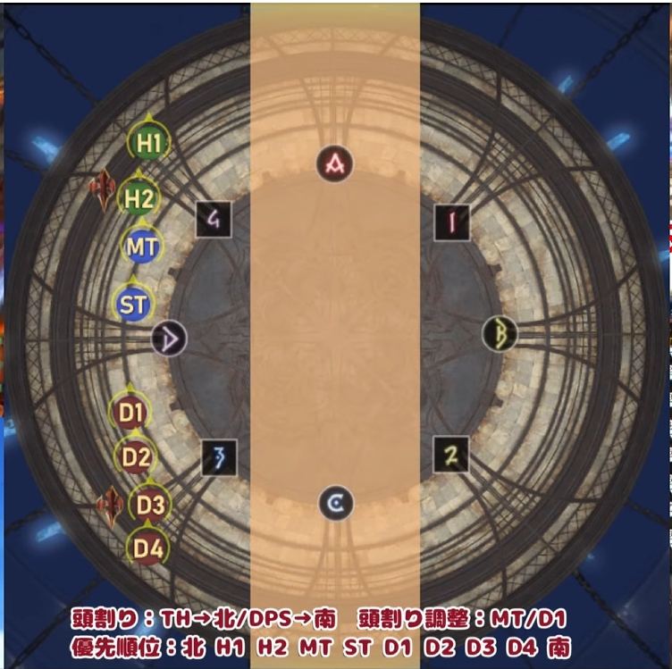 頭割り: THは北、DPSは南。頭割り調整: MT/D1。 優先順位: 北 H1 H2 MT ST D1 D2 D3 D4 南。 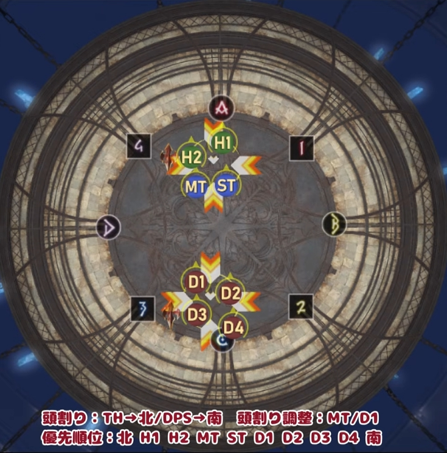 ノックバック後は、ボスが戻ってきたらすぐ殴れるように中央へ寄って4:4頭割り。 |
||||
| 01:26 | 光焔光背LST | リプ。ヘイト1位はボスを少し斜めにして方向指定補助 | リプ | DoT付きで痛い。シンソイル整列中にメレーが殴りやすい向きへ。 |
| 01:42 | シンソイルセヴァー画像LST | 詠唱前に南で直線整列。奇数D、偶数B。線色で炎/雷判断 | 整列 | 炎: 頭割り。雷: 近い3人AoE。無職は優先度でBDへ4:4。 |
|
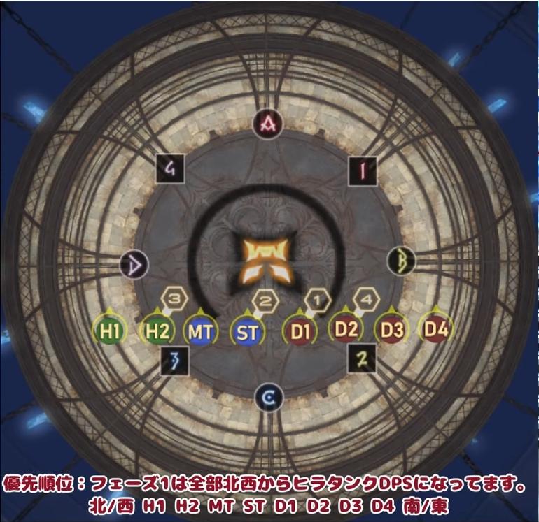 優先順位: フェーズ1は全部北西からヒラタンクDPS。 並び順: 北/西 H1 H2 MT ST D1 D2 D3 D4 南/東。 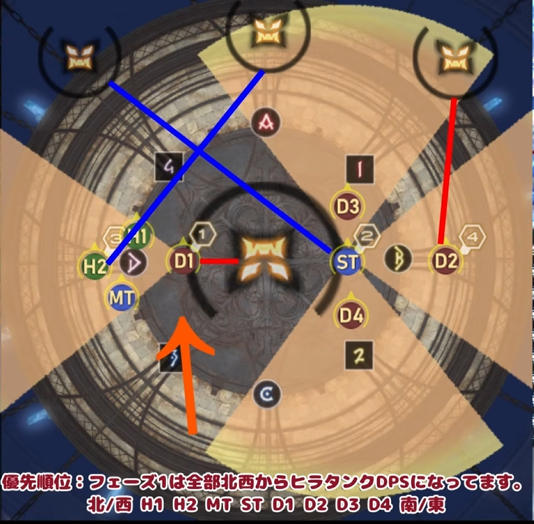 線付き/無職が優先度で左右に分かれる。 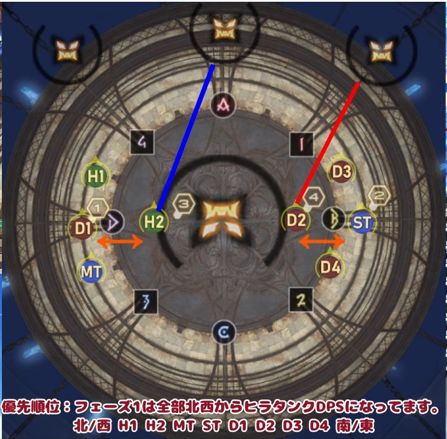 炎/頭割り寄りの配置確認。 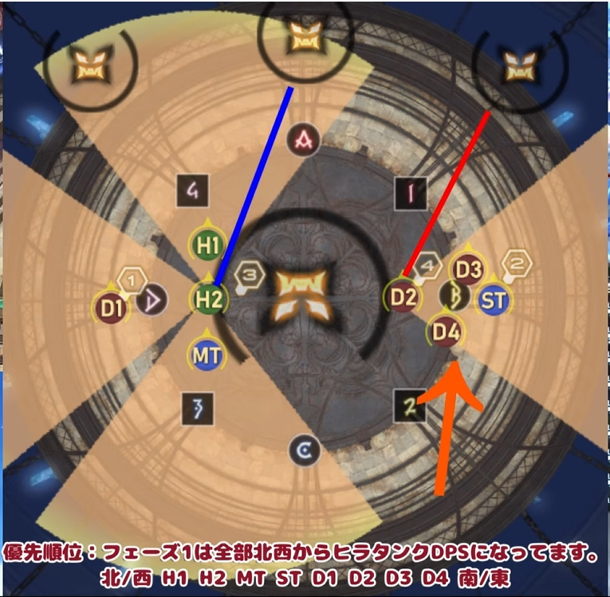 雷/散開寄りの配置確認。 |
||||
| 02:00 | 光焔光背 2回目LT | 前の光焔光背でリプしていない側が、セヴァー2回目着弾前にリプ | リプ | 次の光焔光背まで乗せる意識。 |
| 02:10 | 連鎖爆印刻 2回目LST | MTフルバフ受け、またはST無敵受け。固定方針でスイッチ | フルバフ交代 | ST無敵なら2回目光焔光背直後までにスイッチ。 |
| 02:22 | バーンストライク&塔画像LST | タンクは塔と反対側へ。MT/STの北南をマクロで確認 | 位置 | 塔はH/H2/D4固定寄り、D1/D2/D3調整のリリド式を確認。 |
|
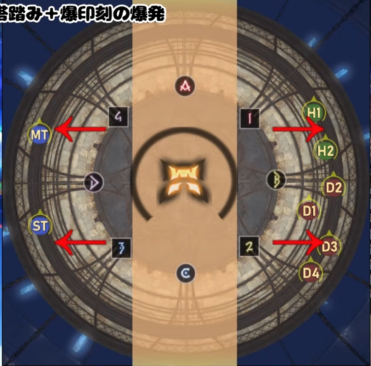 タンクは塔がない側で爆印を処理。図ではMT/STが西側、塔処理組が東側。 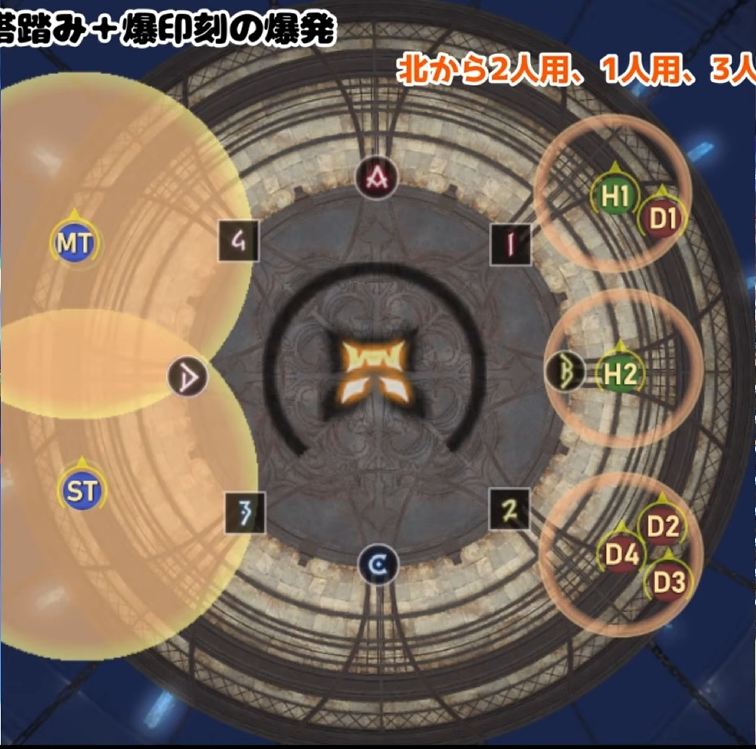 塔人数例: 北から2人用、1人用、3人用。 |
||||
| 02:26 | 爆印LT | STから投げ軽減をもらう。タンク同士の距離を離しすぎない | 投げ | MT側バフが薄い。安定重視なら飛びつかない。 |